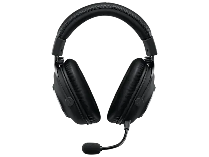

TOP VENTAS
Audio Pro X
Audífono alambricos con diseño cómodo y sonido envolvente.
$70 $99
Información técnica
Especificaciones
| Característica | Detalle |
|---|---|
| Audio Espacial | Compatible con sonido envolvente virtual 7.1 / THX Spatial Audio. |
| Sensibilidad | 100 dB SPL / mW a 1 kHz. |
| Color | Azul noche |
| Compatibilidad | Computadoras y teléfonos |
| Longitud del cable | 1.5 metros |